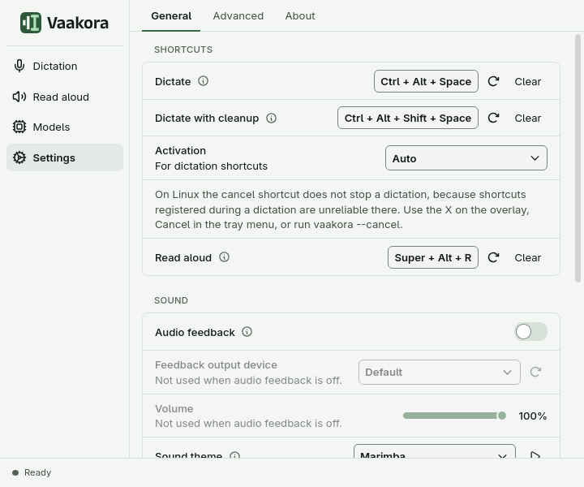

Settings
Settings has three tabs: General, Advanced and About. General holds the shortcuts and the sound options.

- Shortcuts: Dictate, Dictate with cleanup (when cleanup is on) and Read aloud, each with Reset and Clear buttons.
- Activation: a drop-down for the dictation shortcuts, with the options Auto (hold to record or tap to toggle), Hold (records while you hold the shortcut) and Toggle (tap to start recording, tap again to stop). Auto is the default.
- A shortcut can be cleared with its Clear button. Clearing is refused when it would leave no dictation shortcut.
- A shortcut already assigned to another action is refused with a message naming that action.
- Version and update state are in About. Update checks are off until a Vaakora release channel exists.
The settings for each job are in its own section: Dictation, Cleanup and Read aloud.